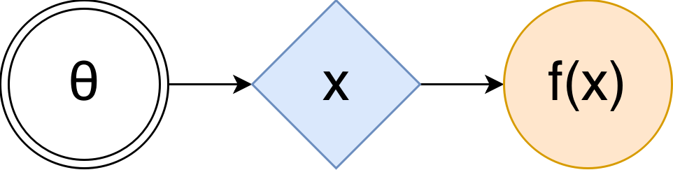
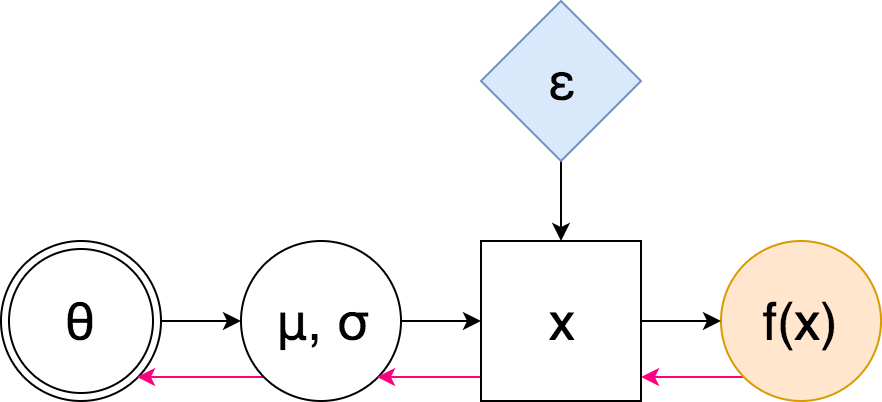
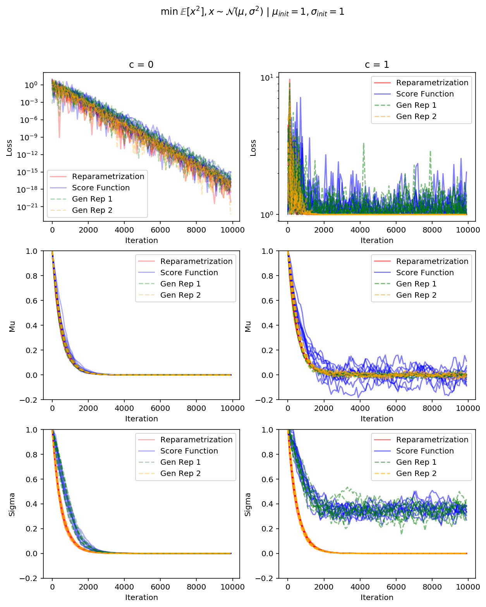

Last year I covered some modern Variational Inference theory. These methods are often used in conjunction with Deep Neural Networks to form deep generative models (VAE, for example) or to enrich deterministic models with stochastic control, which leads to better exploration. Or you might be interested in amortized inference.
All these cases turn your computation graph into a stochastic one – previously deterministic nodes now become random. And it’s not obvious how to do backpropagation through these nodes. In this series I’d like to outline possible approaches. This time we’re going to see why general approach works poorly, and see what we can do in continuous case.
First, let’s state the problem more formally. Consider the approximate inference objective:
\[ \mathbb{E}_{q(z|x)} \log \frac{p(x, z)}{q(z|x)} \to \max_{q(z|x)} \]
or reinforcement learning objective
\[ \mathbb{E}_{\pi(a|s)} R(a, s) \to \max_{\pi} \]
In the following I’ll denote our objective as
\[ \mathcal{F}(\theta) = \mathbb{E}_{p(x \mid \theta)} f(x) \to \max_{\theta} \]
In that case the (stochastic) computation graph (SCG) can be represented in the following form:

Here \(\theta\), in double circle is a set of tunable parameters, blue rhombus is a stochastic node that takes some random values, but their distribution depends on \(\theta\) (maybe through some complicated but known function, like a neural network), and orange circle is the value we’re maximizing. In order to estimate the \(\mathcal{F}(\theta)\) using such graph, you just take your \(\theta\)s, compute \(x\)’s distribution, take as many samples from it as you can get, compute \(f(x)\) for each one, and then just average them.
How do we maximize it though? The workhorse of optimization in modern deep learning is the Stochastic Gradient Descent (or, in our case, Ascent), and if we want to apply it in our case, all we need to compute is an (preferably unbiased and low-variance) estimate of the gradient of the objective \(\nabla \mathcal{F}(\theta)\). This is seemingly easy for anyone familiar with basic calculus:
\[ \begin{align*} \nabla_{\theta} \mathcal{F}(\theta) & = \nabla_{\theta} \mathbb{E}_{p(x \mid \theta)} f(x) = \nabla_{\theta} \int p(x \mid \theta) f(x) dx \\ & = \int \nabla_{\theta} p(x \mid \theta) f(x) dx = \int \nabla_{\theta} \log p(x \mid \theta) f(x) p(x \mid \theta) dx \\ & = \mathbb{E}_{p(x \mid \theta)} \nabla_{\theta} \log p(x \mid \theta) f(x) dx \end{align*} \]
There you have it! Just sample some \(x \sim p(x \mid \theta)\), calculate \(f(x)\) using this sample, and then multiply the result by the gradient of log density – here’s your unbiased estimate of the true gradient. However, in practice people have observed that this estimator (called the score-function estimator, and also REINFORCE in reinforcement learning literature) has a large variance, making it impractical for high-dimensional \(x\).
And it kinda makes sense. Look at the estimator. It does not use gradient information of \(f\), so it does not have any guidance where to move \(p(x|\theta)\) to make the expectation \(\mathcal{F}(\theta)\) higher. Instead, it tries many random \(x\)s, for each sample it takes the direction one should go to make this sample more probable, and weights these directions according to the magnitude of \(f(x)\). When averaged, this gives you true direction to maximize the objective, but it’s hard to randomly stumble upon good \(x\) using just a few samples (especially early in training, or in high-dimensional spaces), hence high variance.
This manifests a necessity of either ways to improve the variance of such estimator, or different, more efficient approaches. In the following we will consider both.
Reparametrization trick
Being perfectly aware of the aforementioned limitation, Kingma et. al used a smart trick in their Variational Autoencoder paper. Basically, the idea is the following: if some random variables can be decomposed into combinations of other random variables, can we transform our stochastic computation graph such that we don’t need to backpropagate through randomness, and have stochasticity injected into the model as independent noise?
Turns out, we can. Namely, for any gaussian random variable \(x \sim \mathcal{N}(\mu, \sigma^2)\) we can decompose it into affine transformation of some independent standard gaussian noise: \(x = \mu + \sigma \varepsilon\) 1 where \(\varepsilon \sim \mathcal{N}(0, 1)\).
The SCG then becomes
Here pink arrows denote the “flow” of backpropagation: notice that we do not encounter any sampling nodes along the way – hence we don’t need to use the high-variance score-function estimator. Let us look at the formulas.
\[ \nabla_\theta \mathbb{E}_{p(x|\theta)} f(x) = \nabla_\theta \mathbb{E}_{p(\varepsilon)} f(\mu(\theta) + \sigma(\theta) \varepsilon) = \mathbb{E}_{p(\varepsilon)} \nabla_\theta f(\mu(\theta) + \sigma(\theta) \varepsilon) \]
Notice that this time we do use the gradient of \(f\)! This is the crucial difference between this estimator, and the score-function one: in the later we were averaging random directions using their “scores”, whereas here we learn an affine transformation of independent noise such that transformed samples lie in an area that has large \(f(x)\). Gradient information of \(f\) tells us where to move samples \(x\), and we do so by adjusting \(\mu\) and \(\sigma\).
Okay, so it looks like a great method, why not use it everywhere? The problem is that even though you can always transform a uniformly distributed random variable into any other, it’s not always computationally easy 2. For some distributions (Dirichlet, for example 3) we simply don’t know any effective transformations from parameter-free random variables.
Generalized reparametrization trick
The reparametrization trick can be seen as a transformation \(\mathcal{T}(\varepsilon | \theta)\) of some independent noise into a desired random variable. Conversely, if \(\mathcal{T}\) is invertible, \(\mathcal{T}^{-1}(x | \theta)\) is a “whitening” / “standardizing” transformation: it takes some random variable that depends on parameters \(\theta\) and makes it parameter-independent.
What if we find a transformation that maybe does not whiten \(x\) completely, but still significantly reduce its dependence on \(\theta\)? This is the core idea of the The Generalized Reparameterization Gradient paper. In that case \(\varepsilon\) would still depend on \(\theta\), but hopefully only “weakly”.
\[ \begin{align*} \nabla_\theta \mathbb{E}_{p(x|\theta)} f(x) &= \nabla_\theta \mathbb{E}_{p(\varepsilon|\theta)} f(\mathcal{T}(\varepsilon \mid \theta)) \\ &= \underbrace{\mathbb{E}_{p(\varepsilon|\theta)} \nabla_\theta f(\mathcal{T}(\varepsilon \mid \theta))}_{g^\text{rep}} + \underbrace{\mathbb{E}_{p(\varepsilon|\theta)} \nabla_\theta \log p(\varepsilon|\theta) f(\mathcal{T}(\varepsilon \mid \theta))}_{g^\text{corr}} \end{align*} \]
Here \(g^\text{rep}\) is our usual reparametrized gradient, and \(g^\text{corr}\) is the score-function part of it. It’s easy to see that varying the transformation \(\mathcal{T}\) allows you to interpolate between the fully reparametrized gradients and the fully score-function-based gradients. Indeed, if \(\mathcal{T}\) whitens \(x\) completely, then \(p(\varepsilon|\theta)\) is independent of \(\theta\) and \(\nabla_\theta \log p(\varepsilon|\theta) = 0\), leaving us with \(g^\text{rep}\) only. If, however, \(\mathcal{T}\) is an identity map, which does not do anything, then \(\nabla_\theta f(\mathcal{T}(\varepsilon \mid \theta)) = \nabla_\theta f(\varepsilon) = 0\), and we recover the score-function estimator.
This formula looks great, but it requires us to know the distribution of \(\mathcal{T}^{-1}(x \mid \theta)\) to sample \(\varepsilon\) from. It’s more convenient to reformulate the gradient in terms of samples from \(p(x|\theta)\), which we can do after some algebraic manipulations:
\[ \begin{align*} g^\text{rep} =& \mathbb{E}_{p(x|\theta)} \nabla_x f(x) \nabla_\theta \mathcal{T}(\varepsilon \mid \theta) \\ g^\text{corr} =& \mathbb{E}_{p(x|\theta)} \Bigl[\nabla_\theta \log p(x|\theta) + \nabla_x \log p(x|\theta) \nabla_\theta \mathcal{T}(\varepsilon \mid \theta) \\& \quad\quad\quad\quad+ \nabla_\theta \log |\text{det} \nabla_\varepsilon \mathcal{T}(\varepsilon \mid \theta)|\Bigr] f(x) \\ & \text{where } \varepsilon = \mathcal{T}^{-1}(x \mid \theta) \end{align*} \]
In this formulation we sample \(x\) as usual, pass it through the “whitening” transformation \(\mathcal{T}^{-1}(x | \theta)\) to obtain sample \(\varepsilon\), and substitute these variables into gradient constituents. One can also see everything but \(f(x) \nabla_\theta \log p(x \mid \theta)\) as a control variate (we’ll talk about these later in the series) that uses \(f\)’s gradient information and hence can be expected to be quite powerful.
The last question is which transformation to choose? The formulas authors propose to use usual standardizing transformation, i.e. to subtract the mean and divide by standard deviation. This choice is motivated by the following: a) it’s computationally convenient, recall that we need both \(\mathcal{T}\) and \(\mathcal{T}^{-1}\) 4; b) it makes first two moments independent of \(\theta\), which is some sense makes resulting variable “weakly” dependent on it.
Rejection sampling perspective 5
Another interesting perspective on generalized reparametrization comes from the following thought: there are efficient samplers for many distributions, can we somehow backpropagate through the sampling process? This is what authors of the Reparameterization Gradients through Acceptance-Rejection Sampling Algorithms paper decided to find out.
You want to sample some distribution \(p(x|\theta)\), but can’t compute and invert its CDF, what to do then? You can use rejection sampling procedure. Basically, you take some proposal distribution \(r(x \mid \theta)\) that is easy to sample from, find a scaling factor \(M_\theta\) such that scaled proposal is uniformly higher than the target density for all \(x\): \(M_\theta r(x|\theta) \ge p(x|\theta) \forall x\). Then you generate points randomly under the scaled \(M_\theta r(x|\theta)\) curve, and keep only those that are also below the \(p(x|\theta)\) curve:
- Generate \(x \sim r(x|\theta)\).
- Generate \(u \sim U[0, M_\theta r(x|\theta)]\).
- If \(u > p(x|\theta)\), repeat from step 1, else return \(x\).
Moreover, at step 1 we can use some transformation \(\mathcal{T}(\varepsilon | \theta)\) of the sample \(\varepsilon \sim r(\varepsilon)\) (provided the scaled density of transformed variable is uniformly higher). This is how numpy generates Gamma variables: if samples \(\varepsilon\) from standard Gaussian, transforms the sample through some function \(x = \mathcal{T}(\varepsilon|\theta)\), and then accepts it with probability \(a(x|\theta)\) 6.
Let’s find the density of \(\varepsilon\)s that lead to acceptance of corresponding \(x\)s. Some calculations (provided in supplementary) show that
\[ p(\varepsilon|\theta) = M_\theta r(\varepsilon) a(\mathcal{T}(\varepsilon|\theta)|\theta) \]
Note that this density is easy to calculate, and if we reparametrize generated samples \(\varepsilon\), we’d get samples \(x\) we’re looking for \(x = \mathcal{T}(\varepsilon|\theta)\). Hence the objective becomes
\[ \mathcal{F}(\theta) = \mathbb{E}_{p(\varepsilon|\theta)} f(\mathcal{T}(\varepsilon|\theta)) \]
Differentiating it w.r.t. \(\theta\) gives \[ \nabla_\theta \mathcal{F}(\theta) = \mathbb{E}_{p(\varepsilon|\theta)} \nabla_\theta f(\mathcal{T}(\varepsilon|\theta)) + \mathbb{E}_{p(\varepsilon|\theta)} f(\mathcal{T}(\varepsilon|\theta)) \nabla_\theta \log p(\varepsilon|\theta) \]
Now compare these addends to the \(g^\text{rep}\) and \(g^\text{corr}\) from the previous section. You can see that they’re exactly the same!
In the previous section we choose the transformation \(\mathcal{T}^{-1}\) such that it tries to remove at least some dependency on \(\theta\) from samples \(x\). This section allows us to view the same method from the other end: if you have some independent noise \(\varepsilon\) and a transformation \(\mathcal{T}\) that makes the samples look like samples from the target density \(p(x|\theta)\), then you can add some rejection sampling on top to compensate for the mismatch, and still enjoy the lower variance of gradient estimate.
A (very) simple example
Let’s see how much variance reduction the reparametrization trick actually gets us in a very simple problem. Namely, let’s try to minimize expected square of a Gaussian random variable 7 (shifted by some positive constant \(c\), we will see later how it comes into play):
\[ \mathcal{F}(\mu, \sigma) = \mathbb{E}_{x \sim \mathcal{N}(\mu, \sigma^2)} [x^2 + c] \to \min_{\mu, \sigma} \]
First, reparametrized objective is
\[ \mathcal{F}^\text{rep}(\mu, \sigma) = \mathbb{E}_{\varepsilon \sim \mathcal{N}(0, 1)} (\mu + \sigma \varepsilon)^2 \]
And its stochastic gradients are \[ \hat \nabla_\mu \mathcal{F}^\text{rep}(\mu, \sigma) = 2 (\mu + \sigma \varepsilon) \\ \hat \nabla_\sigma \mathcal{F}^\text{rep}(\mu, \sigma) = 2 \varepsilon (\mu + \sigma \varepsilon) \]
The score-function-based gradients are the following:
\[ \hat \nabla_\mu \mathcal{F}^\text{SF}(\mu, \sigma) = \frac{\varepsilon}{\sigma} \left((\mu + \sigma \varepsilon)^2 + c\right) \\ \hat \nabla_\sigma \mathcal{F}^\text{SF}(\mu, \sigma) = \frac{\varepsilon^2 - 1}{\sigma} \left((\mu + \sigma \varepsilon)^2 + c\right) \]
Both estimators are unbiased, but what are the variances of these estimators? WolframAlpha suggests
\[ \begin{align*} \mathbb{D}\left[\hat \nabla_\mu \mathcal{F}^\text{SF}(\mu, \sigma)\right] &= \frac{(\mu^2 + c)^2}{\sigma^2} + 15 \sigma^2 + 14 \mu^2 + 6 c, \\ \mathbb{D}\left[\hat \nabla_\mu \mathcal{F}^\text{rep}(\mu, \sigma)\right] &= 4 \sigma^2 \\ \mathbb{D}\left[\hat \nabla_\sigma \mathcal{F}^\text{SF}(\mu, \sigma)\right] &= \frac{2 (c + \mu^2)^2}{\sigma^{2}} + 60 \mu^{2} + 74 \sigma^{2} + 20 c, \\ \mathbb{D}\left[\hat \nabla_\sigma \mathcal{F}^\text{rep}(\mu, \sigma)\right] &= 4 \mu^2 + 8 \sigma^2 \end{align*} \]
You can see that not only the score-function-based gradient always has a higher variance, its variance actually explodes as we approach \(\mu = 0, \sigma = 0\) (unless \(c = 0\) and \(\mu\) is small enough to counter \(\sigma\))! This is due to the fact that as your variance shrinks, points somewhat far away from the mean get very tiny probabilities, hence score-function-based gradients thinks it should try very hard to make them more probable.
You might be wodering, how would generalized reparametrization work? If we consider \(\mathcal{T}^{-1}(x|\mu,\sigma) = x - \mu\) transformation (it “whitens” first moment only), then we obtain the following gradient estimates:
\[ \hat \nabla_\mu \mathcal{F}^\text{g-rep}(\mu, \sigma) = 2 (\mu + \varepsilon) \\ \hat \nabla_\sigma \mathcal{F}^\text{g-rep}(\mu, \sigma) = \frac{\varepsilon^2 - \sigma^2}{\sigma^3} (\mu + \varepsilon)^2 \]
This is the reparametrized gradient w.r.t. \(\mu\) and score-function gradient w.r.t. \(\sigma\) (notice that \(\varepsilon \sim \mathcal{N}(0, \sigma^2)\) in this case). I don’t think this is an interesting scenario, so instead we’ll consider a weird-looking second-moment-whitening transformation \(\mathcal{T}^{-1}(x|\mu,\sigma) = \frac{x - \mu}{\sigma} + \mu\) with \(\mathcal{T}(\varepsilon|\mu,\sigma) = \sigma (\epsilon - \mu) + \mu\). The gradients for this transformation are:
\[ \begin{align*} \hat \nabla_\mu \mathcal{F}^\text{g-rep}(\mu, \sigma) &= \left(c + \left(\mu + \sigma \left(\epsilon - \mu\right)\right)^{2}\right) \left(\epsilon - \mu\right) - 2 \left(\mu + \sigma \left(\epsilon - \mu\right)\right) \left(\sigma - 1\right) \\ \hat \nabla_\sigma \mathcal{F}^\text{g-rep}(\mu, \sigma) &= 2 \left(\epsilon - \mu\right) \left(\mu + \sigma \left(\epsilon - \mu\right)\right) \end{align*} \]
You can already see that the magnitude of the gradients does not explode when the variance \(\sigma\) goes to zero. Let’s check the variances:
\[ \begin{align*} \mathbb{D}\left[\hat \nabla_\mu \mathcal{F}^\text{g-rep}(\mu, \sigma)\right] &= (\mu^2 + c)^{2} + 2 c \sigma^{2} + 4 c \sigma + 10 \mu^{2} \sigma^{2} + 4 \mu^{2} \sigma + 7 \sigma^{4} + 4 \sigma^{3} + 4 \sigma^{2} \\ \mathbb{D}\left[\hat \nabla_\sigma \mathcal{F}^\text{g-rep}(\mu, \sigma)\right] &= 4 \mu^{2} + 8 \sigma^{2} \end{align*} \]
First, we see that the variance of gradient w.r.t. \(\sigma\) has become identical to the variance of the reparametrized case. Second, we can confirm that the variance does not explode as we approach the optimum.
 Gen Rep 1 is a generalized reparametrization with only 1st moment whitened out,
Gen Rep 2 – with only the second one
The simulation plots clearly show that score-function-based gradients and the first generalized reparametrization fail to converge, which is in line with our variance analysis. The second generalized reparametrization, however, performs just as good, as the full reparametrization, even though it does have higher variance.
All the code I wrote while working on this post can be found here. Though it’s quite messy, I warned you.
Conclusion
We have discussed tricks that make Stochastic Variational Inference with continuous latent variables computationally feasible. However, quite often we’re interested in models with discrete latent variables – for example, we might be interested in a model that dynamically chooses one computation path or another, essentially controlling how much computation time to spend on a given sample. Or, train a GAN for textual data – we need a way to backpropagate through discriminator’s inputs.
We’ll talk about such methods in the next post.
Equality here means both sides have the same distribution.↩
We know that for \(X \sim p(x)\) with c.d.f. \(F(x)\) we have \(F(X) \sim U[0, 1]\), hence \(X = F^{-1}(u)\) for standard uniform \(u \sim U[0, 1]\), so there always exist a (smooth, if \(x\) is continuous) transformation from standard uniform noise to any other distribution. However, computing CDF function often requires expensive integration, which is quite often infeasible.↩
Original VAE paper lists Dirichlet distribution among ones that have effective reparametrizations, however that’s actually not the case, as you still need to generate parametrized Gamma variables.↩
Technically, you could derive the density \(p(\varepsilon|\theta)\) and to sample from it – this way you’d not need the inverse \(\mathcal{T}^{-1}\). However, it’s not easy in general.↩
This section is largely based on the Reparameterization Gradients through Rejection Sampling Algorithms blogpost.↩
Normally that’d be just \(a(x|\theta) = \tfrac{p(x|\theta)}{M_\theta r(x|\theta)}\), however, if we don’t have \(r(x|\theta)\) readily available, we can express the acceptance probability in terms of \(\varepsilon\): \[a(\varepsilon|\theta) = \tfrac{p(\mathcal{T}(\varepsilon|\theta)|\theta) |\text{det} \nabla_\varepsilon \mathcal{T}(\varepsilon|\theta)|}{M_\theta r(\varepsilon)}\]↩
One might argue that our approach is flawed, as the optimal distribution is \(\mathcal{N}(0, 0)\) which is not a valid distribution. However, here we’re just interested in the gradient dynamics as we approach this optimum.↩